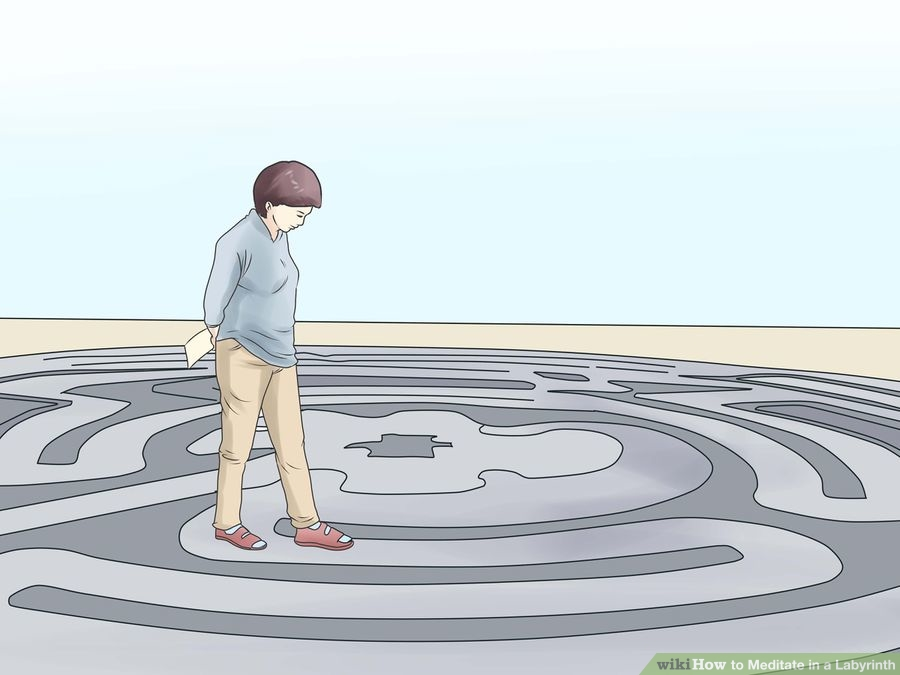
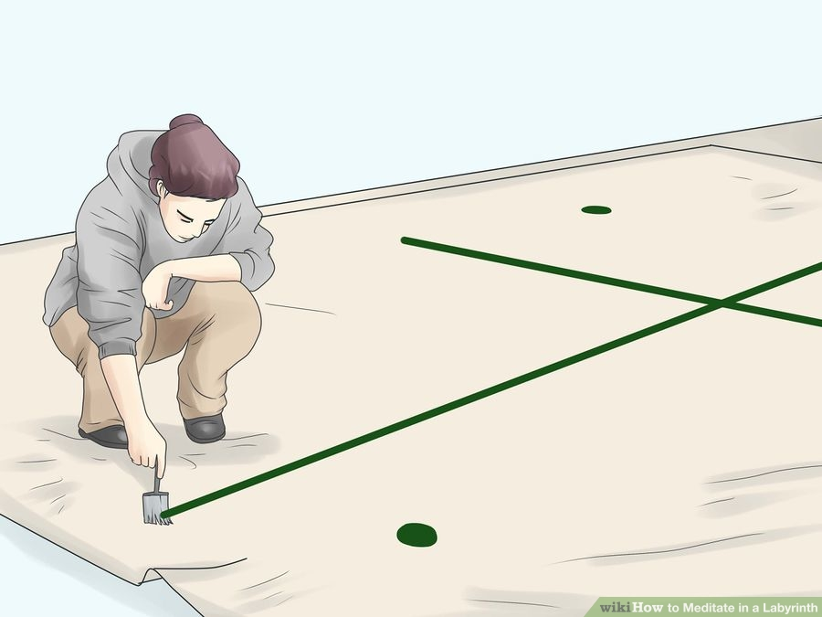
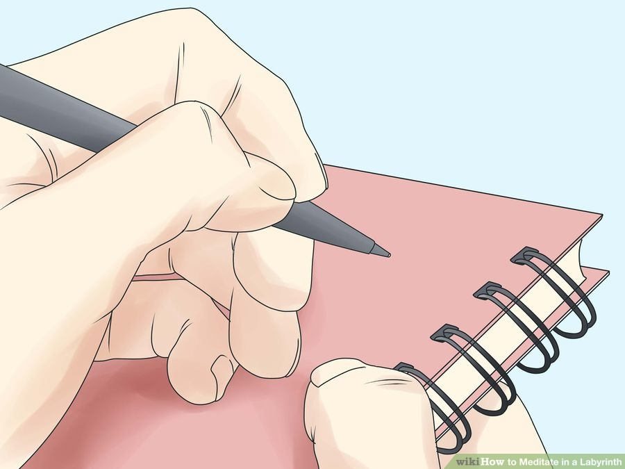
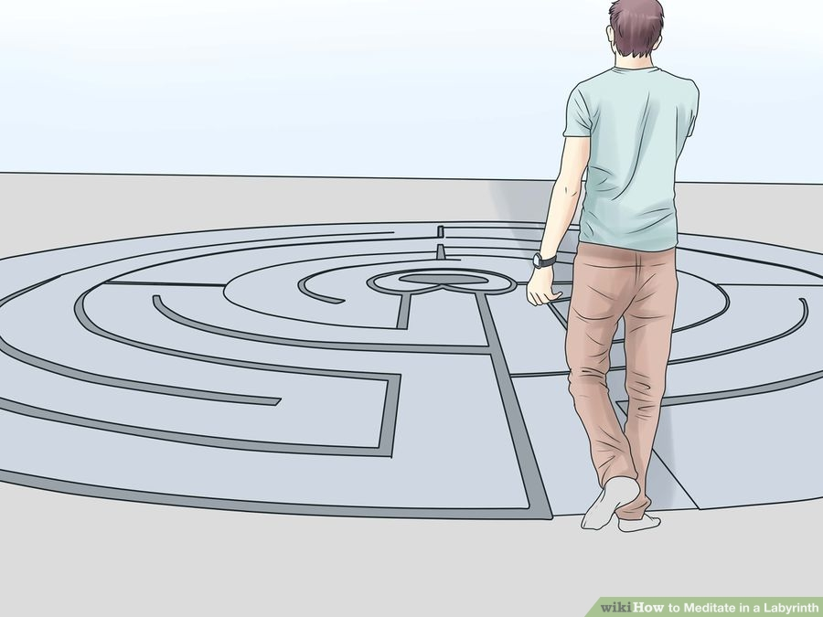
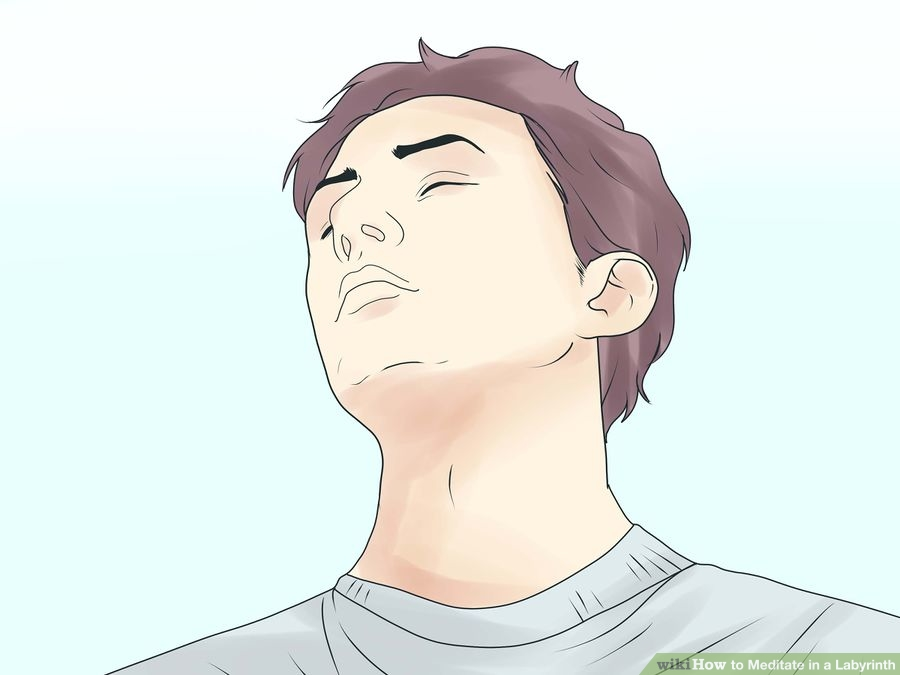
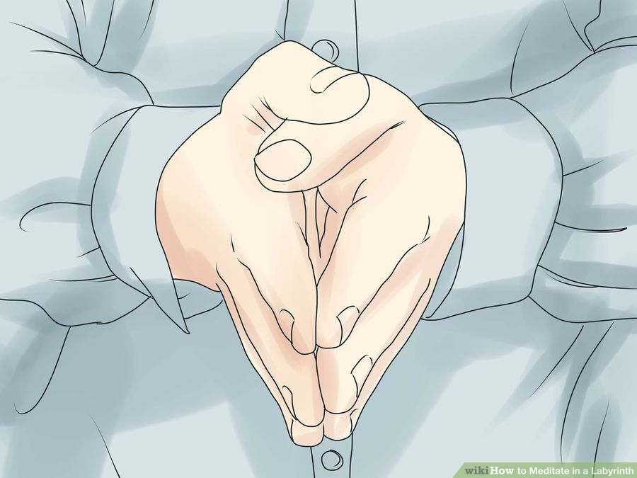
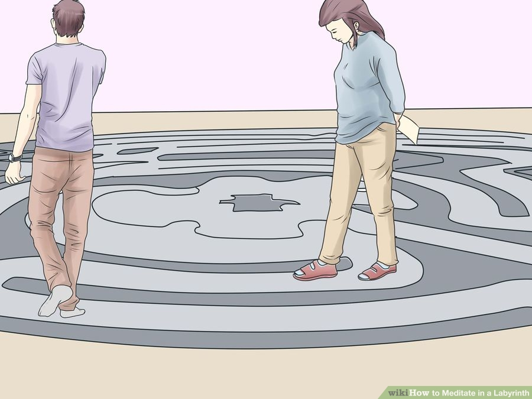
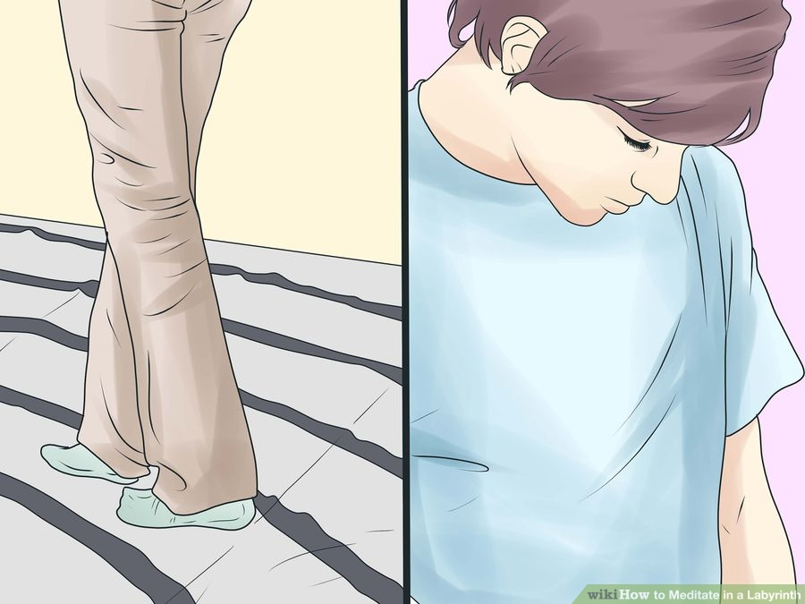
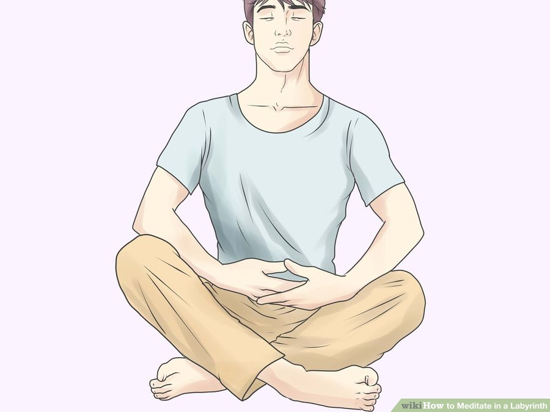
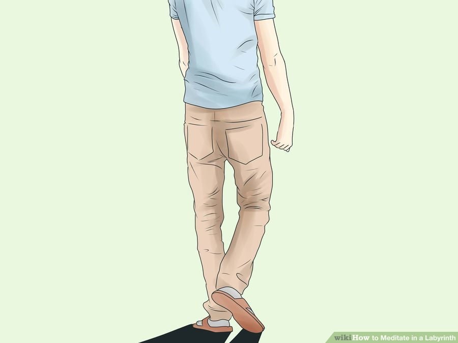

How to Meditate in a Labyrinth
For thousands of years, human beings have created the spiral paths that fold back on themselves within labyrinths for reasons ranging from decoration to art and myth. As well, the labyrinth has long been used as a creative or spiritual tool. If you have a problem, you can use the labyrinth to help solve it. If you have a need to discover spiritual meaning or find inspiration, a labyrinth can be put to service for you.
As a meditation tool consisting of a walkable single line path, a labyrinth can be a source of solace and can quiet a distracted or overactive mind. When troubled by disturbing emotions or unfortunate events in your life, walking a labyrinth can help resolve your inner discomfort and still your mind enough for you to get clarity of what is going on. As a spiritual tool, both the calming and quieting effect and the metaphorical symbolism of the labyrinth as a pathway on a journey or a spiritual track can help you to ponder life's greater mysteries.
Part 1. Finding or creating your labyrinth

1. Find a labyrinth If you live near or can visit a suitable labyrinth, this will be an ideal place to meditate or take your spiritual walk. Labyrinths are typically found in such places as church courtyards or within churches, parks, spa resorts, educational institutions and even medical facilities, such as hospital gardens. Always seek one in a reasonably quiet and unhurried place, where you can walk the labyrinth undisturbed and stay at peace.
- The Labyrinth Society and Veriditas have collaborated on a website called the World-Wide Labyrinth Locator at http://labyrinthlocator.com/. Go to the website and type in the town, state or country where you are searching. You can also pick a radius, such as "within 25 miles (40 km)." A list of public labyrinths in churches, hospitals, parks, etc. with addresses will show up. There may be some private labyrinths on the list as well where the owners will allow people to walk if they call ahead.

2. Make a Labyrinth. If you're not able to find a labyrinth, it is possible to create your own. Indeed, doing so can serve as part of the creative process and will help you to unwind literally, as the labyrinth unfolds before you. To make one, find a suitable area of sand, dirt or other ground material in which you can draw lines. Alternatively, tape down a lot of white paper and paint yourself a labyrinth on the ground. If making your own labyrinth in sand or soil, here are some suggestions for creating it:
- Draw a cross measuring about 1.8 meters or 6 feet across. Place a dot in each quadrant of the cross.
- Draw four curving lines that head clockwise in direction:
- Join the top of the cross to the top right dot
- Join the top left dot to the right arm of the cross
- Join the left arm of the cross to the bottom right dot
- Circle from the bottom left dot around to the bottom arm of the cross.

3. While creating the labyrinth, begin the feelings of calm and reflection. Take note of all the things you're experiencing, including the sun or breeze on your skin, the texture of the sand or soil beneath your feet and drawing stick and notice sounds about you such as bird song, the sound or water or waves, the distant babble of human beings experiencing living and the rustling of trees. Making the labyrinth should form an act of moving meditation or spiritual reflection in itself.
Part 2. Meditation within a labyrinth

1. Stand in front of the entrance to the labyrinth State your intention as clearly as possible. For example: I want a solution to my problem with ... It could be anything that is troubling you.

2. Center yourself by taking a couple of deep breaths. This is important because doing this you instruct your subconscious and all other parts of yourself to pay attention to your sincere wish of solving your problem.

3. Acknowledge your coming meditative or spiritual journey within the labyrinth. You may also say a short prayer or smudge yourself, depending on which faith you adhere to. Closing your eyes and reflecting or taking a simple bow are other nice ways to begin the process.
- Decide whether you will walk barefoot or with shoes on. With bare feet, you can feel the texture of the earth beneath your feet and connect to its grounding forces.

4. Begin your walk. The first step sets the pace for your walk. It can be fast or slow. Choose your intention for the walk. Are you being spiritual, reflective, mindful, playful, creative or something else? If you're problem solving, your walk becomes a meditation when you surrender all your problems and just walk. Other parts of you have now a chance to process your request of a solution.
- If you are very upset: fast walking in lets the emotions dissipate easier. Most people try slowing down their mind by slower walking, relying on the mind and body reflection.

5. Continue to walk Keep your mind quiet, and still pestering thoughts each time they arise. Concentrate on the placement of one foot before the other and rhythmic, gentle and regular breathing.
- If you're problem solving, walk as you didn’t have any problems at all, let it all go. Surrender to the activity of attentive walking. Let the burden (your problem) fall off your shoulders. Various parts of your being are now processing your wish for solution. All you have to do is to let it incubate and not interfere, let it be and let go of any expectations. Continue to walk as you didn’t have any problems at all, let it all go.
- If you're going on a spiritual journey or seeking creative inspiration, again let it all go and just surrender to the experience of walking the labyrinth.

6. Pause on reaching the center You may stop here for awhile, sit or lay down if you feel like it and meditate or reflect. The main thing is to let yourself surrender totally to your inner process. It feels so good to have all the time you need.
- If you don't have a problem, question or quest for inspiration, just sit quietly and let things be.

6. Walk out. When you are ready, just walk out. Accept the insights and gifts you may have received. Adopting a sense of gratitude will always facilitate resolutions. Offer your thanks for what you have learned.